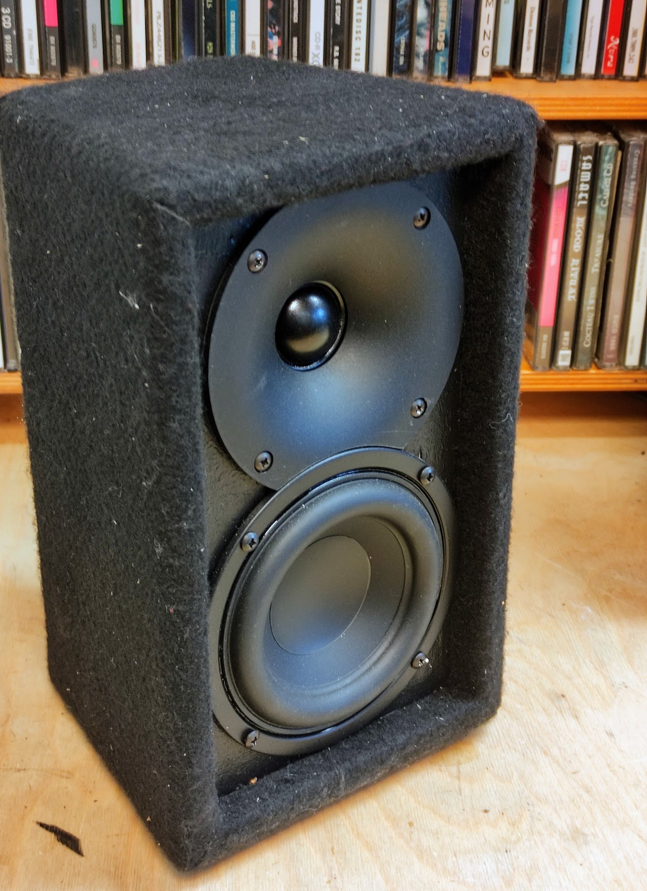
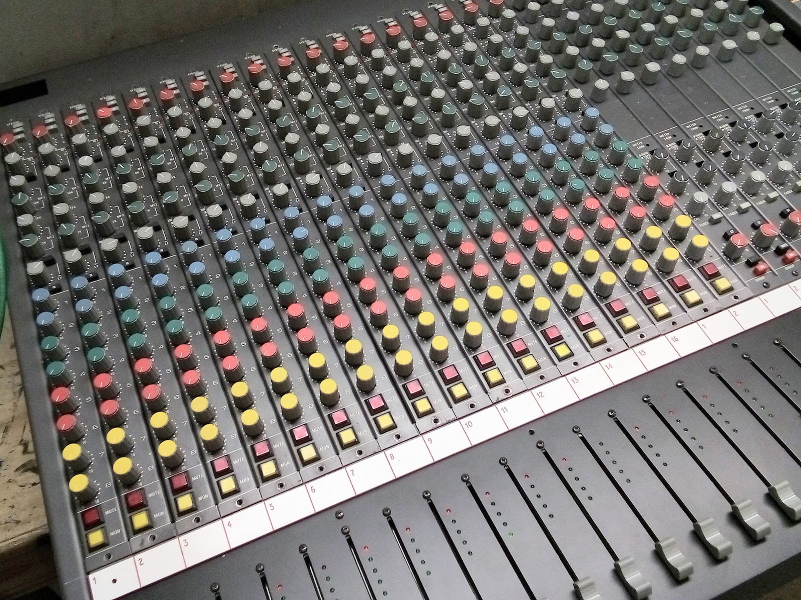
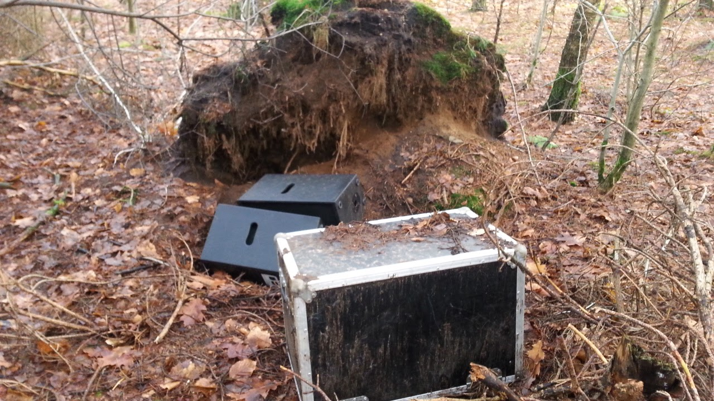

Past Projects
Horns, restorations and systems from the live-sound years. 13 notes.
 Past Projects
Past ProjectsPMC LB1 a historic investigation in legacy sound, part 1
On the bench are a pair of PMC LB1 studio monitors, a box of spare tweeters and woofers, and the smell of something that has been on fire. This is a loudspeaker forensics job. Today some vintage PMC LB1 studio monitors…
 Past Projects
Past ProjectsPMC LB1 a historic investigation in legacy sound, part 2
On the bench is the repaired LB1 crossover, now with beefier resistors and a fresh MKT cap. The next question is not how it measures, but how it sounds when turned up. ...onwards... So now, what will we do? Upgrade that…

Past ProjectsPMC LB1 a historic investigation in legacy sound, part 3
On the bench is a home-brew transmission line built from a cheap 4-inch driver and some folded plywood. The point is not the box; it is the FIR crossover that goes with it. As I mentioned in the previous post, I was…
 Electronics
ElectronicsMaking a DI box
On the bench is a batch of stainless-steel DI boxes, a box of OEP transformers and a phantom-power problem that will not go away. This is the latest round in a decades-long DI habit. Over the past decades, making a DI…
 Electronics
ElectronicsFighting long boot times when using older RPI
On the bench is an old Raspberry Pi with a HifiBerry DAC and a USB stick, taking what feels like forever to boot. The hardware is fine; the operating system is the problem. It has been quite a while since I built my…

Past ProjectsTAC Scorpion revival
On the bench is a TAC Scorpion console from the late '80s, heavy as an armoured tank and missing its VU meters. The project is part repair, part investigation into why I preferred it over the Soundcrafts. Back in the…
 Past Projects
Past ProjectsWorking Distortion
On the bench is a small tube rig with a pair of glowing valves, built to make distortion on purpose. After frequency response, distortion is the thing we still cannot describe properly. Those friends who know me from…
 Past Projects
Past ProjectsActive X-overed HiFi ?
On the bench is a bookshelf system built from leftovers: a Soundweb 9088ii, a pair of tractrix horns, a Seas mid and a pair of unknown subs. The design rule was simple: buy nothing new. In the Netherlands we have this…
 Electronics
ElectronicsBringing Soundweb greens back to live
On the bench is a stack of green Soundweb 9088 and 9088ii units, some of them dead. They are old, but they can do FIR — which is why they are still worth repairing. We are still using quite a lot of old green Soundweb…
 Past Projects
Past ProjectsLouReed with new carbon cone speakers
On the bench is a new carbon-fibre 12-inch driver, still in its box from the summer shipment. The first listen was promising enough that we decided to upgrade the LouReed systems. This summer the shipment of our…

Past ProjectsLouReed rises again..
On the bench are two battered LouReed cabinets that spent a year and a half in the woods after being stolen from a van. The corners are ruined; the 12-inch drivers, astonishingly, are not. More than a year and a half…
 Past Projects
Past ProjectsHorn making
On the bench are the first two acrylic horns I ever made, with broken corners where the mould fought back. They are crude, but they are the start of the tractrix waveguide story. Some pictures of the first horns I made…
 Past Projects
Past ProjectsRaspberry PI with balanced output
On the bench is a Raspberry Pi with a HifiBerry DAC stacked on top, a USB stick and a tangle of power leads. It is meant to be the reference source for tuning a sound system — but first it has to sound good enough to…